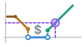

Balances Equilibriumplans-math, a Java library of krm-demo/ai-plans-instr · krm-demo.org


A cash sweep keeps the balance x of a current account (a DDA, demand deposit account) between Tmin and Tmax, or at one target balance T, by moving money In from and Out to an investment account. The graph shows the swept amount y for every current balance x. Drag the handles; T switches to one target balance, $ to amounts.

Sweep statuses
Colours of Swept In
Three softer, coffee-and-cream variants of the two Swept In slices to choose from; everything else stays the same. The choice changes the graph above and the status names (the pictures of the library below keep the current colours).
The same without JavaScript
The library draws one SVG per set of parameters (Java and a Thymeleaf template, no JavaScript inside). The picture adapts to the width it is shown at: the small cart icon, the icon with the $ in the cart, the coloured slices only, then the graph with more and more detail. Below: the same file at six widths.
In full size (760 px and wider), as an <object>: move the mouse over the graph. The frames are plain CSS
:hover; an <img> shows the picture but does not pass the mouse to it.
More pictures: thousands, millions (broken axes), Swept In Zero, target balance (open one and make the window narrower).


Reports
- Test report (Open Test Reporting): {{tests}}, with the picture of every case.
- Coverage report (JaCoCo): {{coverage}} of lines.